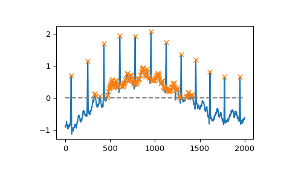
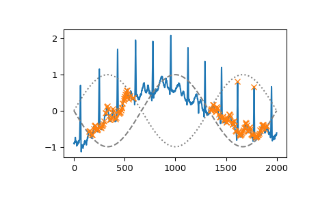
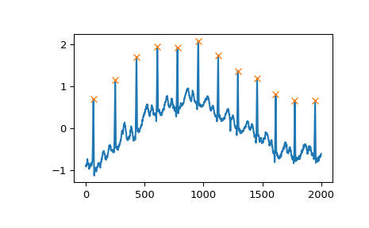
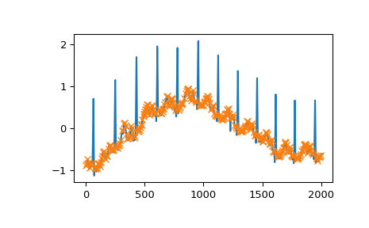
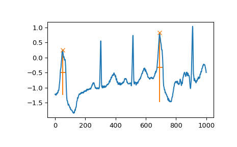

scipy.signal.find_peaks¶
-
scipy.signal.find_peaks(x, height=None, threshold=None, distance=None, prominence=None, width=None, wlen=None, rel_height=0.5, plateau_size=None)[source]¶ Find peaks inside a signal based on peak properties.
This function takes a 1-D array and finds all local maxima by simple comparison of neighboring values. Optionally, a subset of these peaks can be selected by specifying conditions for a peak’s properties.
- Parameters
- xsequence
A signal with peaks.
- heightnumber or ndarray or sequence, optional
Required height of peaks. Either a number,
None, an array matching x or a 2-element sequence of the former. The first element is always interpreted as the minimal and the second, if supplied, as the maximal required height.- thresholdnumber or ndarray or sequence, optional
Required threshold of peaks, the vertical distance to its neighboring samples. Either a number,
None, an array matching x or a 2-element sequence of the former. The first element is always interpreted as the minimal and the second, if supplied, as the maximal required threshold.- distancenumber, optional
Required minimal horizontal distance (>= 1) in samples between neighbouring peaks. Smaller peaks are removed first until the condition is fulfilled for all remaining peaks.
- prominencenumber or ndarray or sequence, optional
Required prominence of peaks. Either a number,
None, an array matching x or a 2-element sequence of the former. The first element is always interpreted as the minimal and the second, if supplied, as the maximal required prominence.- widthnumber or ndarray or sequence, optional
Required width of peaks in samples. Either a number,
None, an array matching x or a 2-element sequence of the former. The first element is always interpreted as the minimal and the second, if supplied, as the maximal required width.- wlenint, optional
Used for calculation of the peaks prominences, thus it is only used if one of the arguments prominence or width is given. See argument wlen in
peak_prominencesfor a full description of its effects.- rel_heightfloat, optional
Used for calculation of the peaks width, thus it is only used if width is given. See argument rel_height in
peak_widthsfor a full description of its effects.- plateau_sizenumber or ndarray or sequence, optional
Required size of the flat top of peaks in samples. Either a number,
None, an array matching x or a 2-element sequence of the former. The first element is always interpreted as the minimal and the second, if supplied as the maximal required plateau size.New in version 1.2.0.
- Returns
- peaksndarray
Indices of peaks in x that satisfy all given conditions.
- propertiesdict
A dictionary containing properties of the returned peaks which were calculated as intermediate results during evaluation of the specified conditions:
- ‘peak_heights’
If height is given, the height of each peak in x.
- ‘left_thresholds’, ‘right_thresholds’
If threshold is given, these keys contain a peaks vertical distance to its neighbouring samples.
- ‘prominences’, ‘right_bases’, ‘left_bases’
If prominence is given, these keys are accessible. See
peak_prominencesfor a description of their content.
- ‘width_heights’, ‘left_ips’, ‘right_ips’
If width is given, these keys are accessible. See
peak_widthsfor a description of their content.
- ‘plateau_sizes’, left_edges’, ‘right_edges’
If plateau_size is given, these keys are accessible and contain the indices of a peak’s edges (edges are still part of the plateau) and the calculated plateau sizes.
New in version 1.2.0.
To calculate and return properties without excluding peaks, provide the open interval
(None, None)as a value to the appropriate argument (excluding distance).
- Warns
- PeakPropertyWarning
Raised if a peak’s properties have unexpected values (see
peak_prominencesandpeak_widths).
Warning
This function may return unexpected results for data containing NaNs. To avoid this, NaNs should either be removed or replaced.
See also
find_peaks_cwtFind peaks using the wavelet transformation.
peak_prominencesDirectly calculate the prominence of peaks.
peak_widthsDirectly calculate the width of peaks.
Notes
In the context of this function, a peak or local maximum is defined as any sample whose two direct neighbours have a smaller amplitude. For flat peaks (more than one sample of equal amplitude wide) the index of the middle sample is returned (rounded down in case the number of samples is even). For noisy signals the peak locations can be off because the noise might change the position of local maxima. In those cases consider smoothing the signal before searching for peaks or use other peak finding and fitting methods (like
find_peaks_cwt).Some additional comments on specifying conditions:
Almost all conditions (excluding distance) can be given as half-open or closed intervals, e.g.,
1or(1, None)defines the half-open interval \([1, \infty]\) while(None, 1)defines the interval \([-\infty, 1]\). The open interval(None, None)can be specified as well, which returns the matching properties without exclusion of peaks.The border is always included in the interval used to select valid peaks.
For several conditions the interval borders can be specified with arrays matching x in shape which enables dynamic constrains based on the sample position.
The conditions are evaluated in the following order: plateau_size, height, threshold, distance, prominence, width. In most cases this order is the fastest one because faster operations are applied first to reduce the number of peaks that need to be evaluated later.
While indices in peaks are guaranteed to be at least distance samples apart, edges of flat peaks may be closer than the allowed distance.
Use wlen to reduce the time it takes to evaluate the conditions for prominence or width if x is large or has many local maxima (see
peak_prominences).
New in version 1.1.0.
Examples
To demonstrate this function’s usage we use a signal x supplied with SciPy (see
scipy.misc.electrocardiogram). Let’s find all peaks (local maxima) in x whose amplitude lies above 0.>>> import matplotlib.pyplot as plt >>> from scipy.misc import electrocardiogram >>> from scipy.signal import find_peaks >>> x = electrocardiogram()[2000:4000] >>> peaks, _ = find_peaks(x, height=0) >>> plt.plot(x) >>> plt.plot(peaks, x[peaks], "x") >>> plt.plot(np.zeros_like(x), "--", color="gray") >>> plt.show()
We can select peaks below 0 with
height=(None, 0)or use arrays matching x in size to reflect a changing condition for different parts of the signal.>>> border = np.sin(np.linspace(0, 3 * np.pi, x.size)) >>> peaks, _ = find_peaks(x, height=(-border, border)) >>> plt.plot(x) >>> plt.plot(-border, "--", color="gray") >>> plt.plot(border, ":", color="gray") >>> plt.plot(peaks, x[peaks], "x") >>> plt.show()
Another useful condition for periodic signals can be given with the distance argument. In this case, we can easily select the positions of QRS complexes within the electrocardiogram (ECG) by demanding a distance of at least 150 samples.
>>> peaks, _ = find_peaks(x, distance=150) >>> np.diff(peaks) array([186, 180, 177, 171, 177, 169, 167, 164, 158, 162, 172]) >>> plt.plot(x) >>> plt.plot(peaks, x[peaks], "x") >>> plt.show()
Especially for noisy signals peaks can be easily grouped by their prominence (see
peak_prominences). E.g., we can select all peaks except for the mentioned QRS complexes by limiting the allowed prominence to 0.6.>>> peaks, properties = find_peaks(x, prominence=(None, 0.6)) >>> properties["prominences"].max() 0.5049999999999999 >>> plt.plot(x) >>> plt.plot(peaks, x[peaks], "x") >>> plt.show()
And, finally, let’s examine a different section of the ECG which contains beat forms of different shape. To select only the atypical heart beats, we combine two conditions: a minimal prominence of 1 and width of at least 20 samples.
>>> x = electrocardiogram()[17000:18000] >>> peaks, properties = find_peaks(x, prominence=1, width=20) >>> properties["prominences"], properties["widths"] (array([1.495, 2.3 ]), array([36.93773946, 39.32723577])) >>> plt.plot(x) >>> plt.plot(peaks, x[peaks], "x") >>> plt.vlines(x=peaks, ymin=x[peaks] - properties["prominences"], ... ymax = x[peaks], color = "C1") >>> plt.hlines(y=properties["width_heights"], xmin=properties["left_ips"], ... xmax=properties["right_ips"], color = "C1") >>> plt.show()
